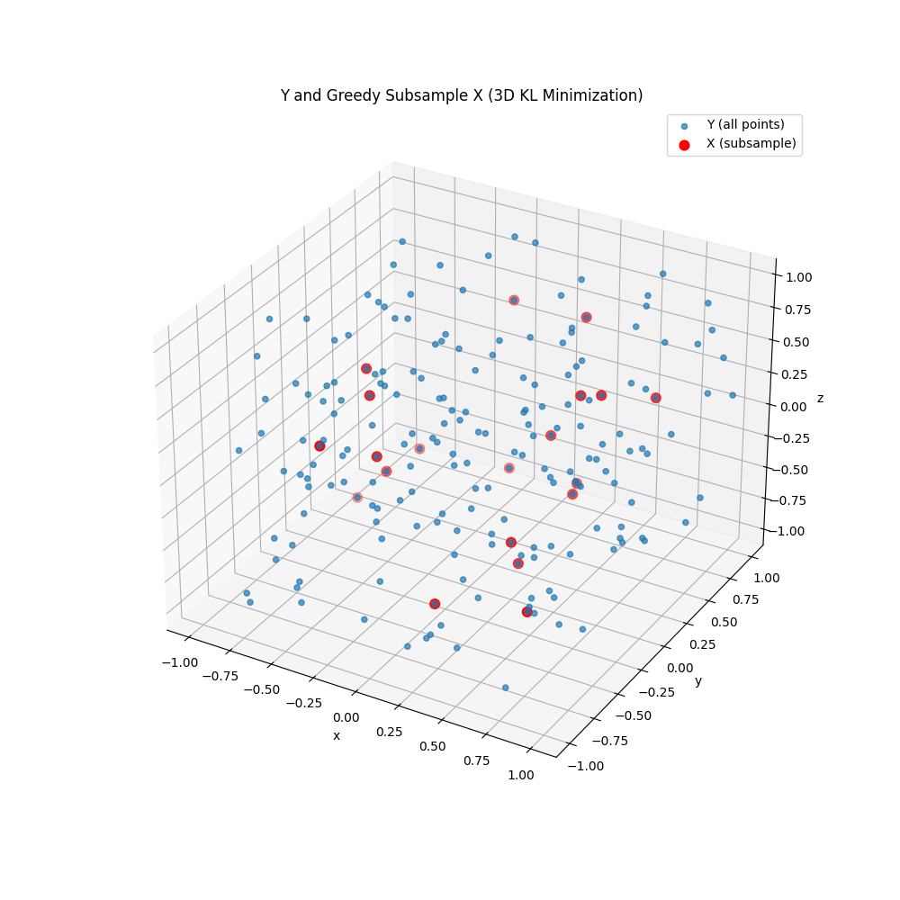
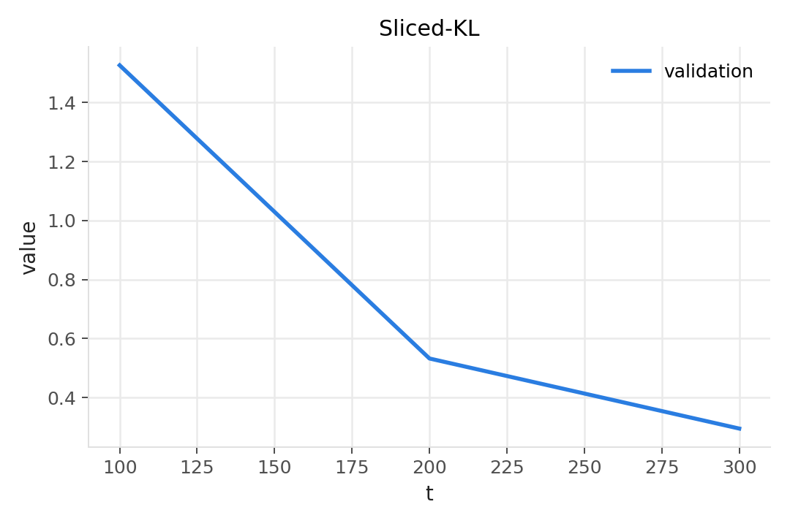
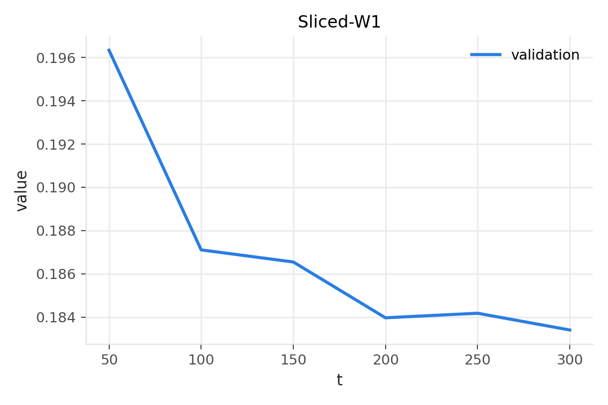
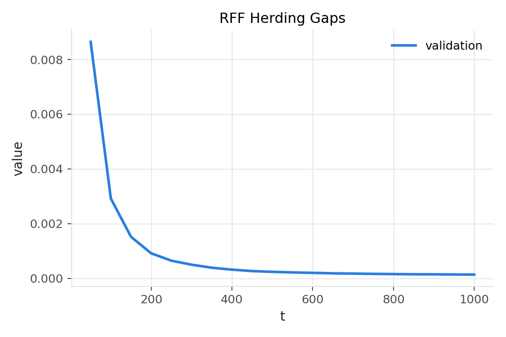
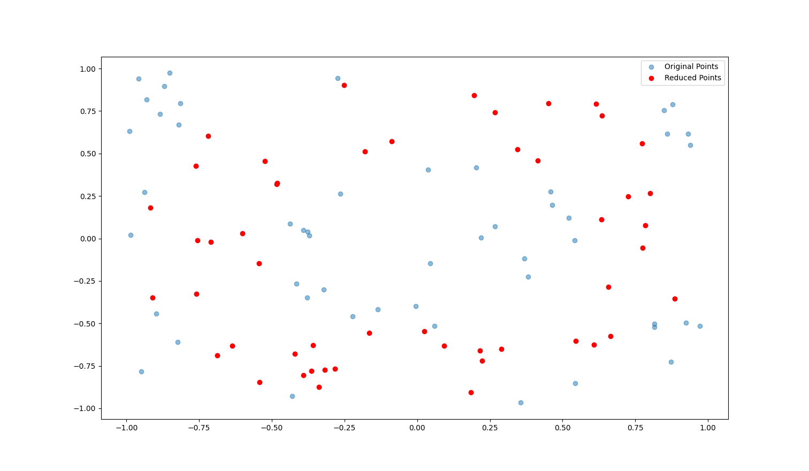
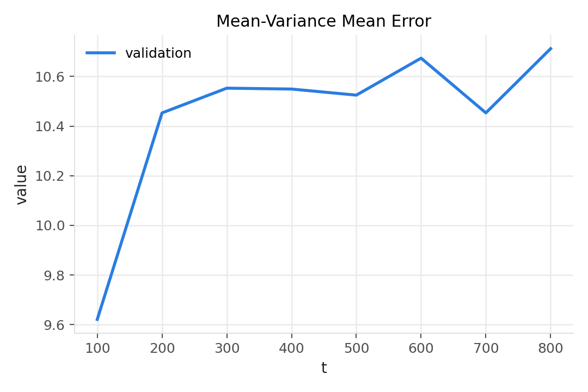
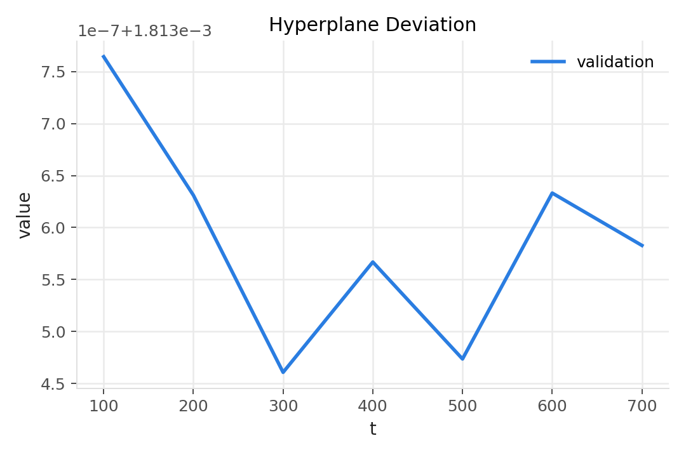

Background
High-dimensional point sets arise in ML, vision, and simulation. A frequent goal is to select a compact subset \(X\subset Y\) of size \(|X|=m\ll|Y|\) that preserves properties of \(Y\): distributional similarity, geometry, or summary statistics. This enables faster downstream computation while controlling approximation error.
We primarily explore methods based in distributional fidelity—matching the probability distribution of the full dataset. We include other methods as lightweight geometric baselines for coverage and shape.
The reader may be curious about this choice. Many downstream uses (likelihood‑based modeling, simulation, risk estimation, domain shift evaluation) are sensitive to where probability mass actually lies. Distributional objectives encourage the subset to reflect modes and relative frequencies, including rare but relevant regions, while de‑emphasizing empty space. In contrast, geometric objectives are excellent for coverage and visualization (capturing extent, principal directions, boundaries), but they may over‑weight low‑density extremes and under‑sample dense cores.
Metrics
First, we must define the metric of measurement. Let \(Y=\{y_i\}_{i=1}^N \subset \mathbb{R}^d\) be the full set and \(X=\{x_j\}_{j=1}^m\subset Y\) the subset. We write \(P_Y\) and \(P_X\) for distributions induced by these sets. In practice, we use either the empirical distribution \(\tfrac{1}{N}\sum_i \delta_{y_i}\) and \(\tfrac{1}{m}\sum_j \delta_{x_j}\), or a smoothed KDE if density estimates are required.
KL divergence measures information loss when approximating \(P_Y\) by \(P_X\) and is asymmetric; we use the data-to-subset direction \(D_{\mathrm{KL}}(P_Y\Vert P_X)\) so mass in \(Y\) that is missing in \(X\) is penalized.
Pushforward and projections: for a unit vector \(v\in\mathbb{S}^{d-1}\), define the 1D projection \(\pi_v(x)=\langle v,x\rangle\). The pushforward of a distribution \(P\) under \(\pi_v\) is \((\pi_v)_∗ P\), the distribution of \(\pi_v(X)\) when \(X\sim P\).
Sliced metrics improve scalability in high dimensions by projecting to 1D along random directions \(v_j\) and aggregating per-slice discrepancies.
Wasserstein‑1 (Earth‑Mover’s) distance between distributions \(P\) and \(Q\) on \(\mathbb{R}^d\) can be defined via optimal transport:
and reduces in 1D to the L1 distance between sorted samples (empirically) or to the difference of quantile functions. We use the sliced variant (average of 1D \(W_1\) over random directions) to obtain a tractable high‑dimensional proxy:
The maximum mean discrepancy (MMD) compares mean embeddings in a reproducing‑kernel Hilbert space (RKHS) with kernel \(k\). An RKHS is a Hilbert space of functions in which point evaluation is continuous, and \(k\) acts as its reproducing kernel. If \(\phi\) is a feature map with \(k(x,y)=\langle\phi(x),\phi(y)\rangle\), the kernel mean embedding is \(\mu_P=\mathbb{E}[\phi(X)]\) and
Here \(Y,Y'\) are independent draws from \(P_Y\), and \(X,X'\) are independent draws from \(P_X\).
Directional projection means/variances and hyperplane distances are simple, stable surrogates when moment matching and extent preservation are the priorities and full distributional matching is unnecessary.
For the sake of completeness, further readings are provided: KL divergence, Wasserstein distance (Earth Mover’s), Computational Optimal Transport, A Kernel Two‑Sample Test, Kernel mean embeddings.
Methods
KL-Divergence-Based Greedy Selection
One principled way to measure how well a subset \(X\) of points represents a full set \(Y\) is to treat each set as defining a probability distribution over space (for example, an empirical distribution or a density estimate) and then compute the Kullback–Leibler (KL) divergence between these distributions. The KL divergence \(D_{\mathrm{KL}}(P\Vert Q)\) from distribution \(P\) to distribution \(Q\) is given by:
or equivalently, for discrete distributions:
In our context, \(P\) can be thought of as the distribution of the full set \(Y\) and \(Q\) as that of the subsample \(X\). Intuitively, \(D_{\mathrm{KL}}(P\Vert Q)\) measures the information lost when \(Q\) (the subset's distribution) is used to approximate \(P\) (the full set's distribution). A smaller KL divergence means the subset \(X\) is a better stand-in for \(Y\).
The KL-divergence-based greedy selection method starts with an empty subset and iteratively adds points from \(Y\) to \(X\) such that each addition yields the greatest reduction in \(D_{\mathrm{KL}}(P_Y\Vert P_X)\). Initially, \(P_X\) (with \(X\) empty or very small) is a poor approximation of \(P_Y\); as more points are added, \(P_X\) should become a closer approximation and the KL divergence decreases. To implement this, we need a way to estimate the distributions \(P_Y\) and \(P_X\) at each step. One approach is to use a discretization of the space into bins (a histogram) or a kernel density estimate. At each iteration, we evaluate which candidate point, if added to \(X\), would most decrease the divergence \(D_{\mathrm{KL}}(P_Y\Vert P_{X\cup\{p\}})\). That point is then selected into \(X\).
- Input: full set \(Y\), target \(m\); estimators for \(P_Y\), \(P_X\)
- \(X = \varnothing\)
- for \(t \in \{1..m\}\):
- best = ∅; bestValue = ∞
- for \(p \in Y\setminus X\):
- score = \(D_{\mathrm{KL}}\big(P_Y\,\Vert\, P_{X\cup\{p\}}\big)\)
- if score \(<\) bestValue: bestValue = score; best = \(p\)
- \(X = X \cup \{\text{best}\}\)
- return \(X\)

This greedy procedure is computationally intensive for large \(Y\) (each iteration scans all remaining points to evaluate the KL divergence). However, it often yields a subset that very closely approximates the distribution of \(Y\). In practice, one can limit the resolution of the distribution estimate or use approximate updates to make this feasible. We implemented this method for both 2D and 3D point sets (in scripts 2d-KL.py and 3d-KL.py), using a fixed grid to estimate \(P_Y\) and \(P_X\) at each step. In the 3D case, the concepts are identical, but estimating \(P(Y)\) and \(P(X)\) requires a 3D grid or kernel, which increases computational cost. The result is a set \(X\) that minimizes the information loss (KL divergence) relative to \(Y\) by greedily covering regions of space in proportion to how much probability mass \(Y\) has in those regions.
Sliced KL Greedy Selection
Sliced KL aggregates 1D KL divergences across random directions \(\{v_j\}_{j=1}^p\), using pushforward distributions of projections \(\langle v_j,\cdot\rangle_{∗} P\). The objective is
- Input: \(Y\), target \(m\), directions \(\{v_j\}_{j=1}^p\)
- \(X = \varnothing\)
- for \(t \in \{1..m\}\):
- best = ∅; bestValue = ∞
- for \(p \in Y\setminus X\):
- score = \(\tfrac{1}{p}\sum_{j=1}^p D_{\mathrm{KL}}\big(\langle v_j,\cdot\rangle_{∗} P_Y\,\Vert\,\langle v_j,\cdot\rangle_{∗} P_{X\cup\{p\}}\big)\)
- if score \(<\) bestValue: bestValue = score; best = \(p\)
- \(X = X \cup \{\text{best}\}\)
- return \(X\)

Sliced Wasserstein-1 (SW1) Greedy Selection
Sliced \(W_1\) minimizes the average 1D Earth-Mover distance across random directions. In 1D with empirical samples, \(W_1\) reduces to the L1 distance between sorted projections.
- Input: \(Y\), target \(m\), directions \(\{v_j\}_{j=1}^p\)
- \(X = \varnothing\)
- for \(t \in \{1..m\}\):
- best = ∅; bestValue = ∞
- for \(p \in Y\setminus X\):
- score = \(\tfrac{1}{p}\sum_{j=1}^p W_1\big(\langle v_j,\cdot\rangle_{∗} P_Y,\langle v_j,\cdot\rangle_{∗} P_{X\cup\{p\}}\big)\)
- if score \(<\) bestValue: bestValue = score; best = \(p\)
- \(X = X \cup \{\text{best}\}\)
- return \(X\)

Kernel Herding (Maximum Mean Discrepancy, MMD)
Kernel herding greedily matches the kernel mean embedding \(\mu_P=\mathbb{E}[\phi(Y)]\) in an RKHS. With an RBF kernel, an equivalent criterion uses kernel evaluations. A practical unweighted variant chooses at step \(t\)
- Input: \(Y\), target \(m\), kernel \(k\)
- Precompute \(\mu(y)=\tfrac{1}{|Y|}\sum_i k(y,y_i)\)
- \(X = \varnothing\)
- for \(t = 1..m\):
- if \(t=1\): \(x = \arg\max_y \mu(y)\)
- else: \(x = \arg\max_y \big[\mu(y) - \tfrac{1}{t-1}\sum_{z\in X} k(y,z)\big]\)
- \(X = X \cup \{x\}\)
- return \(X\)

Projection Mean-Variance Tradeoff Method
Another strategy for representative selection is to ensure that the subset \(X\) matches certain summary statistics of the full set \(Y\). In high dimensions, directly matching the full covariance structure of \(Y\) is complex. Instead, the projection-based mean-variance method uses random one-dimensional projections to capture the distribution's characteristics. The idea is to preserve, for a set of randomly chosen directions, both the mean (first moment) and the spread (second moment, or variance) of the data when projected onto those directions.
Concretely, suppose we draw \(m\) random unit vectors \(\{u_1, u_2, \ldots, u_m\}\) in the plane (for 2D, these could be random angles) or in higher dimensions (random directions on the unit sphere). For each direction \(u_j\), we can compute the mean \(\mu_Y^{(j)}\) and standard deviation \(\sigma_Y^{(j)}\) of the projections of all points in \(Y\) onto \(u_j\). We would like our subset \(X\) to have similar statistics: i.e., for each \(j\), the mean \(\mu_X^{(j)}\) and standard deviation \(\sigma_X^{(j)}\) (computed over points in \(X\) projected onto \(u_j\)) should be as close as possible to those of the full set.
There is often a trade-off between matching the mean and matching the variance (spread) along any given direction, especially if the distribution of \(Y\) is not uniform. For example, picking too many extreme outlier points can quickly match the range or variance of \(Y\), but may shift the subset's mean away from the true center of \(Y\); conversely, picking points near the center will align the means but reduce the variance of \(X\) relative to \(Y\). The greedy algorithm for the mean-variance method balances these by explicitly considering both in its selection criterion. We define an error metric that quantifies the discrepancy in mean and variance along the set of projection directions \(U = \{u_1, \ldots, u_m\}\). One such error function can be written as:
where \(\lambda\) is a weighting factor that can be tuned to give more or less emphasis to matching the variance relative to the mean. In our implementation (2d-mean-var.py), we took \(\lambda = 1\) for simplicity, weighing mean and variance equally.
- Input: \(Y\), target \(k\), directions \(U=\{u_j\}_{j=1}^m\)
- Precompute \(\mu_Y^{(j)},\,\sigma_Y^{(j)}\;\forall j\)
- \(X = \varnothing\)
- for \(t = 1..k\):
- pick \(p \in Y\setminus X\) minimizing \(E(X\cup\{p\})=\tfrac{1}{m}\sum_j[(\mu_Y^{(j)}-\mu_X^{(j)})^2+\lambda(\sigma_Y^{(j)}-\sigma_X^{(j)})^2]\)
- \(X = X \cup \{p\}\)
- return \(X\)


The greedy selection procedure starts with \(X\) empty and adds one point at a time from \(Y\) that most reduces the error \(E(X)\). After each point is added, the means and variances \(\mu_X^{(j)}, \sigma_X^{(j)}\) are recomputed for the new subset before the next selection. In this approach, the random projection directions serve as a proxy for overall shape. By using multiple random projections, we capture different aspects of the distribution of \(Y\) without needing to consider the full high-dimensional geometry directly. This makes the method scalable: one can choose \(m\) (the number of projections) to balance accuracy and computational cost. In practice, even a modest number of random directions (e.g. \(m = 10\) or 20) can yield a good approximation of the data's spread in various orientations. The chosen subset \(X\) will tend to include both central points (to keep the projected means aligned with \(Y\)) and some peripheral points (to account for the variance along those projections). Thus, it inherently balances bias (mean alignment) and variance (coverage of spread) in multiple directions.
Baseline Geometric Method (Hyperplane Distance Preservation)
As a baseline, we also consider a simpler geometric selection strategy. This method aims to preserve the range or extent of the point set \(Y\) along various directions, without explicitly accounting for distribution or statistical moments. In 2D, a convenient way to do this is by using random hyperplanes (which in 2D are random lines through the origin) and ensuring that, for each such line, the subset \(X\) has a point that lies as far out along that line as the farthest point in \(Y\). In other words, \(X\) should approximate the convex hull of \(Y\) by capturing extreme points.
One implementation is as follows: sample a set of \(k\) random unit direction vectors \(\{v_1, v_2, \ldots, v_k\}\) in 2D. For each direction \(v_i\), find the point \(p_i \in Y\) that maximizes the signed distance \(v_i \cdot p\) (i.e. the projection of \(p\) onto \(v_i\)). Include each such \(p_i\) in the subset \(X\). (If the same point ends up selected by multiple directions, it need only be included once.) This yields up to \(k\) points that cover the extremes of \(Y\) in those sampled directions. We used a variant of this idea in 2d.py. To make sure both sides of each hyperplane are considered, one can also sample \(v_i\) and \(-v_i\) pairs or sample more directions and then take the top \(k\) extreme points overall.
This baseline does not attempt to match the overall distribution of points; rather, it focuses on the geometric boundary. It will ensure that the subset spans a similar bounding box or convex shape as \(Y\), but it may under-sample dense interior regions (since no explicit effort is made to pick points from high-density areas). The baseline is computationally cheap (linear in \(|Y|\) for a given set of directions) and provides a point of comparison for the more sophisticated strategies above.
- Input: full set \(Y\), target \(k\)
- Sample \(k\) random unit directions \(\{v_i\}\)
- \(X = \varnothing\)
- for \(i = 1..k\):
- \(p_i = \arg\max_{p\in Y} v_i^\top p\)
- \(X = X \cup \{p_i\}\)
- return \(X\)

Experiments
Per‑method figures appear with each method (2D/3D visuals and 64D progress plots). Below is a concise, per‑method analysis guided by those figures.
KL (grid/KDE). Quantitatively, KL drops fastest with \(|X|\). Qualitatively (3D), points concentrate in dense regions while spanning the support. Cost scales with grid/KDE resolution; strongest when density accuracy matters.
Sliced‑KL. Aggregates 1D KL across \(p\) directions. Divergence declines rapidly; larger \(p\) improves stability and reduces variance in the objective at extra compute. Robust, high‑dimensional alternative to full KL.
Sliced‑W1. Average 1D transport distance. Progress curves decrease steadily; more robust to support mismatch/outliers than KL. Captures geometric differences in location/scale/shape through projections; cost governed by \(p\) and 1D sorting.
Kernel Herding (MMD). MMD surrogate improves consistently; quality depends on kernel and lengthscale. With RFF, scales well to high‑d and large \(|Y|\). Tends to match smooth feature averages; may under‑emphasize sharp extremes depending on kernel.
Mean–Variance. Projection‑mean error reduces quickly; visuals (2D) show center + spread captured. Not distributional—can miss multi‑modal density alignment. Simple and stable; good for spread‑oriented summaries.
Hyperplane. Extent deviation shrinks; visuals show strong coverage of extremes/hull. Cheapest, but can under‑represent dense cores and interior structure; best as a geometric baseline.
Summary. For representative subsets, distributional methods (KL, Sliced‑KL, Sliced‑W1, MMD) deliver higher fidelity to \(P_Y\) than purely geometric surrogates. Sliced objectives and herding offer favorable accuracy–cost trade‑offs in higher dimensions.
Conclusion
KL. Best distribution match; use when density fidelity is paramount and compute allows.
Sliced‑KL. KL‑like with better scalability; increase \(p\) for stability; strong default in high‑d.
Sliced‑W1. Transport‑aware and robust to support mismatch; good for geometry‑sensitive distributions.
Kernel Herding (MMD). Efficient via RFF; excels when kernel choice reflects task similarity; tunable cost.
Mean–Variance. Preserves directional moments and spread; choose for quick, spread‑focused summaries.
Hyperplane. Preserves extent/extremes; useful baseline or when boundary coverage matters most.
Recommendation. Prefer distributional objectives for statistically faithful subsets; use geometric ones for fast coverage or as baselines. Hybrids are promising when both density and shape must be preserved.
Transcript
Figures
References
- Kullback–Leibler divergence (overview)
- Wasserstein metric / Earth Mover’s distance (overview)
- Computational Optimal Transport — Peyré & Cuturi (survey)
- A Kernel Two‑Sample Test — Gretton et al., JMLR 2012
- Kernel Mean Embedding of Distributions — Muandet et al. (survey)
- Pushforward measure (notation)